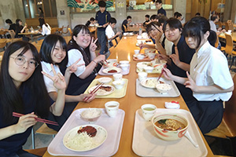
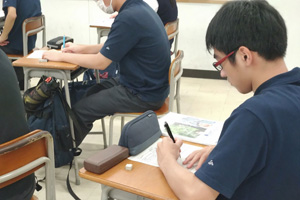

処理する力
情報システム系
C言語、Java、アルゴリズム、データベース、システム設計。条件と手順を組み立て、動く仕組みへ変えます。
学びの内容を見るコース案内
プログラミングも、デザインも。入学してから両方へ触れ、自分の進みたい方向を見つける3年間です。
プログラミングも、デザインも
情報コースは、情報を使うだけで終わりません。処理の手順を考え、伝わる形を設計し、動くもの・見えるものとして完成させます。

処理する力
C言語、Java、アルゴリズム、データベース、システム設計。条件と手順を組み立て、動く仕組みへ変えます。
学びの内容を見る表現する力
Photoshop、Illustrator、Web、DTP、3Dグラフィックス。相手と目的に合わせ、伝わる形を作ります。
学びの内容を見る| 時期 | 学びの中心 | 確かめること |
|---|---|---|
| 1年次 | 普通教科と情報の専門科目、基本操作、情報の扱い方 | PCに慣れ、処理と表現の両方を試す |
| 2年次 | Office、画像処理、C言語、アルゴリズム、ITパスポート対策 | 得意な作業と深めたい方向を見つける |
| 3年次 | 情報システム系／情報クリエイト系の専門実習 | 進学・就職へつながる知識、資格、作品を積み上げる |
資格は、覚えた量ではなく使える範囲の確認
スマートフォンで絵を描くところから始まり、高校でIllustrator、表計算、文書作成、3Dへ学びを広げました。進学後はキャラクター制作、プログラミング、商業ロゴ、ホームページ、3D住宅デザインへ取り組んでいます。
高校では3DCGとPhotoshopに手応えを感じ、理想の住宅や地形を制作。数学の試験で積んだ自信も入試へつなげ、進学後はC言語とゲーム制作を学んでいます。
毎年2個以上を目標に6つの検定へ合格。プログラミングや校内ボランティアも大学入試で伝え、高校で得た基礎が大学の情報分野の講義を理解する助けになっています。
プログラミング、画像処理、表計算を幅広く学びながら、国家試験へ挑戦。生徒会や部活動にも全力で取り組めることを、コースの魅力として挙げています。
高知工科大学、千葉工業大学、東京工科大学、東京造形大学、香川短期大学など。情報・工学・デザインをさらに深めます。
神戸電子専門学校、大阪情報コンピュータ専門学校、穴吹デザインカレッジ、穴吹ITビジネスカレッジなど。職種に近い制作へ進みます。
アオイ電子、タケダ、YKK AP四国製造所、日鋼サッシュ製作所、東かがわ市役所など。情報活用力を幅広い仕事へつなげています。


